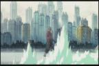
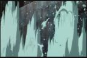
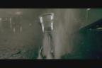
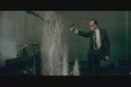
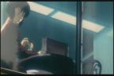
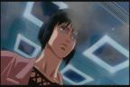
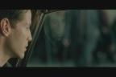
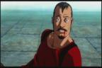
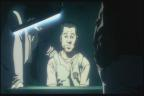

|

If you look closely in the 2nd pic, u can see the gunmen, he is wearing
thermal-optic camouflage.
Conspiracy Rating: 7

While GitS emphasizes the question of the human soul, the Matrix talks
about humanity and its existance. Here we see Motoko looking out in the
city at the regular people, contemplating about her existance as well(she
is a cyborg, the Ghost being a metaphor for the soul). We see Neo looking
out a car window on the way to the Oracle, questioning the world he thought
he knew. The GitS scene is very long, while the Matrix scene is pretty
short. Conspiracy Rating: 6

Ok, no screenshots for The Matrix here, because in the Matrix, everyone
is essentially brainwashed and givin false memories. The same kind of concept
is applied in GitS where these two characters are brainwashed, givin false
memories, and act as pawns for the Puppet Master. Another movie with similar
concept: Dark City. Conspiracy Rating: 7
On to more Scene Comparisons |

{kind=link}
{kind=link}
{kind=link}
{kind=link}
{kind=link}
{kind=link}
{kind=link}
{kind=link}
{kind=link}